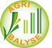
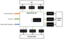

Section 1 Introduction
AGEC-LCI is a VBA application hosted in Microsoft Excel that computes emissions generated from the application of soil amendments, fertilizers and metal-based fungicides in agriculture (Figure 1.1).

Figure 1.1: Emissions Computed by AGEC-LCI
A state of the art analysis of the models for computing direct field emission from fertilizers, pesticides and soil amendments was carried out. Acknowledging that agricultural emissions are site- and time dependent, a parsimonious approach was considered for the selection of the models (Table 1.1). See Section 4 for more details on the selected models.
| Emission |  agri footprint (Durlinger et al. 2017) agri footprint (Durlinger et al. 2017) |
 ecoinvent v3 (Nemecek and Schnetzer 2011) ecoinvent v3 (Nemecek and Schnetzer 2011) |
 AGRIBALYSE ® (Koch and Salou 2015) | WFLDB (Nemecek et al. 2014) |  AGEC-LCI |
|---|---|---|---|---|---|
| Ammonia (NH3) | IPCC (2006) | Agrammon (Tier 3 methodology for Switzerland) | EMEP Tier 2 (EEA 2009) | EMEP Tier 2 (EEA 2013) | EMEP Tier 2 (EEA 2009 & EEA 2013) |
| Nitrous oxide (N2O) | IPCC (2006) | IPCC (2006) crops: Tier 1 animals: Tier 2 | IPCC (2006) crops: Tier 1 animals: Tier 2 | IPCC (2006) crops: Tier 1 animals: Tier 2 | "IPCC (2006) crops: Tier 1(a) |
| Nitrate (NO3-) | IPCC (2006) | Europe: SALCA-Nitrate (Richner et al. 2014), Other countries: SQCB (Faist et al, 2009) | Annual French crops: COMIFER 2001 adjusted (Tailleur et al. 2012),Permanent crops: SQCB (Faist et al, 2009) | Europe: SALCA-Nitrate (Richner et al. 2014), Other countries: SQCB (Faist et al, 2009) | SQCB (Faist et al, 2009) |
| Phosphorus (P,PO43-) | (Struijs, Beusen, Zwart, & Huijbregts, 2011) | SALCA-P (Prasuhn, 2006) | SALCA-P (Prasuhn, 2006) | SALCA-P (Prasuhn, 2006) | SALCA-P (Prasuhn, 2006) |
| Heavy metals (Cd, Cr, Cu, Hg, Ni, Pb, Zn) | (Mels et al., 2008, Romkens & Rietra, 2008, Nemecek & Schnetzer, 2012) | SALCA method (Freiermuth, 2006) | SALCA method (Freiermuth, 2006) | SALCA method (Freiermuth, 2006) | SALCA method (Freiermuth, 2006) |
| Methane (CH4) | Dutch National Inventory Reports | IPCC (2006) Tier 2 | IPCC (2006) Tier 2 | IPCC (2006) Tier 2 | - |
| Synthetic pesticides | 100 % of the substance emitted to agricultural soil | 100 % of the substance emitted to agricultural soil | 100 % of the substance emitted to agricultural soil | 100 % of the substance emitted to soil(b) | - |
(a): The AGEC-LCI tool does not compute enteric emissions of livestock.
(b): Rule followed in the first and second release of the WFLDB. The third release will follow the rules defined in Glasgow workshops (Nemecek et al. 2014).
References
Durlinger, Bart, Elena Koukouna, Roline Broekema, Mike van Paassen, and Jasper Scholten. 2017. “Agri-Footprint 4.0. Part 2: Description of Data.” Electronic Article, 193. http://www.agri-footprint.com/wp-content/uploads/2018/03/Agri-Footprint-4.0-Part-2-Description-of-data-2018.pdf.
Koch, Peter, and Thibault Salou. 2015. AGRIBALYSE: Rapport Méthodologique - Version 1.2. Book. Angers, France: ADEME. https://www.ademe.fr/sites/default/files/assets/documents/agribalyse-rapport-methodologique-v1_2.pdf.
Nemecek, Thomas, Xavier Bengoa, J. Lansche, P. Mouron, V. Rossi, and S. Humbert. 2014. “Methodological Guidelines for the Life Cycle Inventory of Agricultural Products. Version 2.0, July 2014.” Journal Article. World Food LCA Database (WFLDB). Quantis and Agroscope, Lausanne and Zurich, Switzerland.
Nemecek, Thomas, and Julian Schnetzer. 2011. “Methods of Assessment of Direct Field Emissions for Lcis of Agricultural Production Systems. Data V3.0 (2012).” Journal Article. Agroscope Reckenholz-Tänikon Research Station ART.